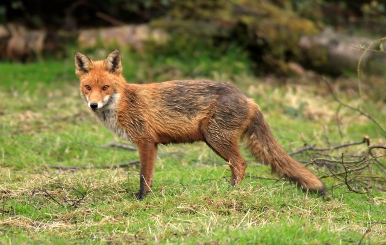

A-level
COMPUTER SCIENCE
Paper 1
June 2017
Preliminary Material
To be opened and issued to candidates on or after 1 September 2016, subject to the
instructions given in the Teachers’ Notes (7517/1/TN).
Note
• The Preliminary Material and Skeleton Program are to be seen by candidates and their teachers
only, for use during preparation for the examination on Friday 16 June 2017. It cannot be used
by anyone else for any other purpose, other than that stated in the instructions issued, until after
the examination date has passed. It must not be provided to third parties.
Information
• A Skeleton Program is provided separately by your teacher and must be read in conjunction with
this Preliminary Material.
• You are advised to familiarise yourselves with the Preliminary Material and Skeleton Program
before the examination.
• A copy of this Preliminary Material and the Skeleton Program wil be made available to you in
hardcopy and electronically at the start of the examination.
• You must not take any copy of the Preliminary Material, Skeleton Program or any other material
into the examination room.
7517/1/PM
IB/M/Jun17/E3
2
There is no Preliminary Material printed on this page
IB/M/Jun17/7517/1/PM
3
INSTRUCTIONS FOR CANDIDATES
The question paper is divided into four sections and a recommendation is given to candidates as to
how long to spend on each section. Below are the recommended timings for the 2017 examination.
Section A
You are advised to spend no more than 45 minutes on this section.
Questions wil examine the specification content not specific to the Preliminary Material.
Section B
You are advised to spend no more than 20 minutes on this section.
You wil be asked to create a new program not related to the Preliminary Material or Skeleton
Program.
Section C
You are advised to spend no more than 15 minutes on this section.
Questions wil refer to the Preliminary Material and the Skeleton Program, but wil not require
programming.
Section D
You are advised to spend no more than 70 minutes on this section.
Questions wil use the Skeleton Program and the Preliminary Material.
Electronic Answer Document
Answers for all questions for all sections must be entered into the word-processed document made
available to the candidate at the start of the examination and referred to in the question paper rubrics
as the Electronic Answer Document.
Preparation for the Examination
You should ensure that you are familiar with this Preliminary Material and the Skeleton Program
for your programming language.
You should ensure that you are able to make modifications to the Skeleton Program that involve the
use, in subclasses, of protected attributes and overridable methods from the Animal class.
Turn over ►
IB/M/Jun17/7517/1/PM

4
RABBITS AND FOXES
Scientists are often interested in predicting how the population of a species of animal might change
over time. Significant changes can have an impact on other animal species as well as on food
production for humans. There are a huge number of factors that can impact on population, making it
far too complex for us to be able to predict population changes with one hundred per cent accuracy in
the real world. Scientists often develop computer models to try to predict how population may
change over time; a computer model is an abstraction of a real world scenario. Scientists can use
the computer model to make predictions about likely population changes in the real world. When a
computer model is run it is called a simulation.
The more accurate the rules in the computer model are, the more reliable the predictions based on
the outputs of the computer model wil be.
The Skeleton Program accompanying this Preliminary Material is a program that models the
population of rabbits and red foxes on an island.
Rabbits live in a collection of underground burrows
called a warren.
They feed on grass and leafy plants. Rabbits breed at a
fast rate and it is not unknown for rabbit populations to
grow almost exponentially, which can cause significant
ecological problems.
Red foxes tend to hunt for food on their own, ranging
over a wide geographical area in their search for prey.
Red foxes wil eat many different animals but rabbits are
their main prey.
In the simulation in the Skeleton Program the island is represented by a square grid (the
landscape). Each cell in the grid can contain either a rabbit warren or a fox or both. A rabbit warren
is represented by a number that indicates the number of rabbits currently living in the warren and a
fox is represented by the letter F.
IB/M/Jun17/7517/1/PM
5
Table 1 describes some of the data stored about each fox.
Table 1
Attribute
Description
ID
A unique number allocated to each animal.
Age
The fox’s age in years (starting value is 0). If a fox does not get
enough food it wil age at a faster rate.
Natural lifespan
Indicates the age at which the fox wil die of old age. If default
values are used then the lifespan for each fox wil be 7.
Probability of death from
The percentage chance that, when the simulation is advanced to
other causes
the next time period, the fox wil die from a cause other than old
age or lack of food (eg disease or being hit by a car). If default
values are used then the probability of death from other causes
for each fox wil be 10%.
Food units needed
The number of rabbits the fox needs to eat in one time period to
stay healthy. If default values are used then the food units
needed for each fox wil be 10.
Food units consumed
The number of rabbits the fox has eaten in the last time period. If
a fox hasn’t eaten any rabbits it wil die. If a fox hasn’t eaten as
many rabbits as indicated by the food units needed attribute then
the fox wil age at a faster rate.
Table 2 describes some of the data stored about each rabbit.
Table 2
Attribute
Description
ID
A unique number allocated to each animal.
Age
The rabbit’s age in years (starting value is 0).
Natural lifespan
Indicates the age at which the rabbit wil die of old age. If default
values are used then the lifespan for each rabbit wil be 4.
Probability of death from
The percentage chance that, when the simulation is advanced to
other causes
the next time period, a rabbit wil die from a cause other than old
age or lack of food (eg being hit by a car or being eaten by a
predator other than a fox). If default values are used then the
probability of death from other causes for each rabbit wil be 5%.
Reproduction rate
If default values are used then the reproduction rate for each
rabbit wil be 1.2. The higher the reproduction rate the higher the
likelihood that this rabbit wil mate with another rabbit (of a
different gender) and have a kit (baby rabbit) that survives its first
time period.
Gender
The gender of a rabbit. When a rabbit is born there is a 50%
chance that it wil be male and a 50% chance that it wil be female.
Turn over ►
IB/M/Jun17/7517/1/PM
6
Table 3 describes some of the data stored about each warren.
Table 3
Attribute
Description
Rabbits
A list containing all the rabbits currently living in the warren.
Periods run
The number of time periods that the warren has existed within the
simulation.
Rabbit count
The number of rabbits currently living in the warren.
Already spread
This attribute indicates if the warren has already spread into a new
warren. There is a maximum size of 99 for a warren (the
maximum number of rabbits that can live in a warren) and when
this value is reached for the first time a new warren is created at a
random location in the landscape.
In the Skeleton Program there is a main menu containing three options.
The first option is to run the simulation with default settings. The second option is to run the
simulation with custom settings. The third option is to exit the program.
If the user chooses to run the simulation with default settings then each rabbit and fox wil have
default values as described in Table 1 and Table 2. The landscape wil contain five warrens and five
foxes, in the positions shown in Figure 1.
Figure 1
0 1 2 3 4 5 6 7 8 9 10 11 12 13 14
0
1 38 F
2
3 52
4 F 67
5
6 F
7 20
8 80
9
10 F
11
12
13 F
14
IB/M/Jun17/7517/1/PM
7
If the user chooses to run the simulation with custom settings then the user can choose the size of
the landscape, the initial number of foxes, the initial number of warrens and the amount of variability
to build into the model. The higher the variability chosen the more difference there wil be between
individual rabbits and individual foxes and the more difference there wil be in the number of rabbits in
each warren at the start of the simulation. Individual rabbits and foxes vary in terms of their lifespan,
their probability of death from other causes, their reproduction rate (rabbits only) and the amount of
food they need to eat (foxes only).
When the simulation is run (either using default or custom settings) the current state of the landscape
is displayed and the user is shown a menu containing five options.
Option one is to advance the simulation to the next time period showing details about the changes
that have happened to each warren and each fox.
Option two is to advance the simulation to the next time period but without showing details of the
changes that have happened to the warrens and foxes.
Option three is to inspect a fox. When this option is chosen the user wil be shown the details of the
fox that is at coordinates specified by the user.
Option four is to inspect a warren. When this option is chosen the user wil be shown the details of
the warren that is at coordinates specified by the user. After the warren details have been displayed
the user can also choose to view details about all the rabbits currently living in the warren.
Option five is to exit the simulation. When the user chooses this option they wil be taken back to
the program’s main menu.
END OF PRELIMINARY MATERIAL
Turn over ►
IB/M/Jun17/7517/1/PM
8
There is no Preliminary Material printed on this page
Copyright information
For confidentiality purposes, from the November 2015 examination series, acknowledgements of third party copyright material wil be published
in a separate booklet rather than including them on the examination paper or support materials. This booklet is published after each examination
series and is available for free download from www.aqa.org.uk after the live examination series.
Permission to reproduce al copyright material has been applied for. In some cases, efforts to contact copyright-holders may have been
unsuccessful and AQA wil be happy to rectify any omissions of acknowledgements. If you have any queries please contact the Copyright Team,
AQA, Stag Hill House, Guildford, GU2 7XJ.
Copyright © 2016 AQA and its licensors. All rights reserved.
IB/M/Jun17/7517/1/PM